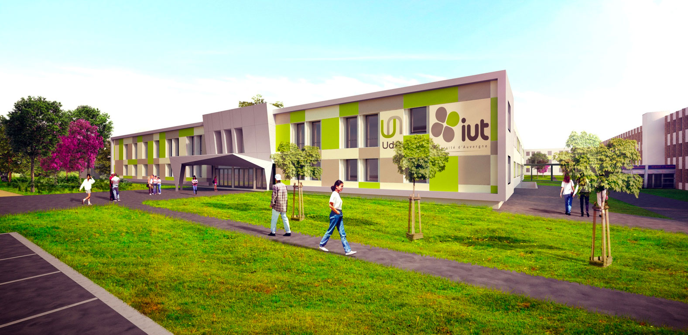

L'Institut Universitaire de Technologie de Clermont-Ferrand propose 15 spécialités de
bachelor sur les 24 existantes dont un BUT informatique sur le site de Clermont-Ferrand.
Ainsi, chaque année, des étudiants issus de cette formation intègrent la première année d'école
d'ingénieur à ISIMA au même titre que des étudiants issus de CPGE ou de la prépa intégrée d'ISIMA.